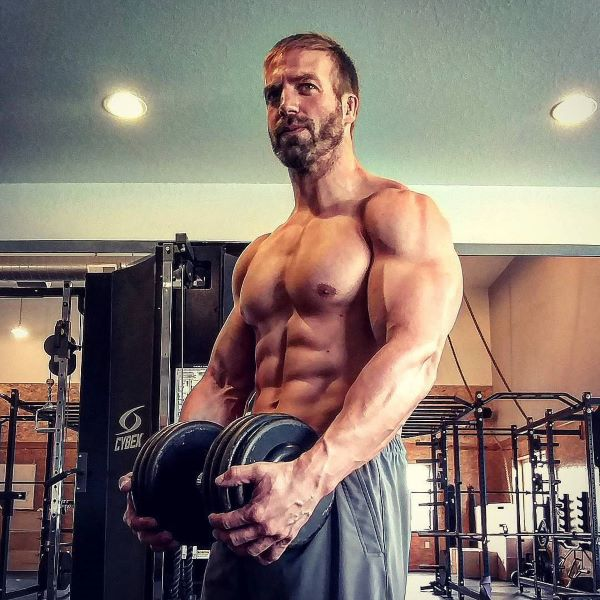

Marucio Gomez
Gym owner
Coaching here in all our martial arts Marucio is a martial arts legend. Marucio has the following qualifications.
- 4th dan Judo
- 3rd dan juijitsu
- 1st dan karate
- accredited Muay Thai coach
Sarah Nova
assistant coach

Assisting the coaching of the karate is Sara Nova our residant karate specialist. Sara is a 5th dan in karate
Guy Victory
Assistant coach

assissting the coaching is guy victory with the following qualifications.
- 2nd dan jui jitsu
- 1st dan karate
Morris Davis
Assistant coach

assisting with the training of Muay Thai and karate is Morris Davis with the following qualifications.
- accredited Muay Thai coach
- 3rd dan karate
Traci Santiago
Fitness coach

Traci is our strength and conditioning specialists. creating personalised programs for each of our members her qualification is
- BSc in Sports science and health and nutrition
Harpreet Kaur
Fitness coach

Our other fitness coach is Harpreet Kaur. Harpreet has the following qualifications
- BSc in Physiotherapy
- Msc in Sports Science